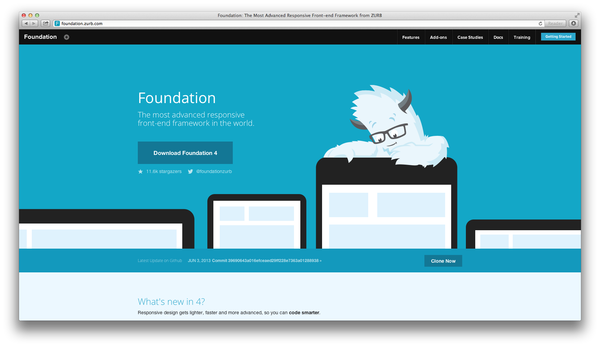
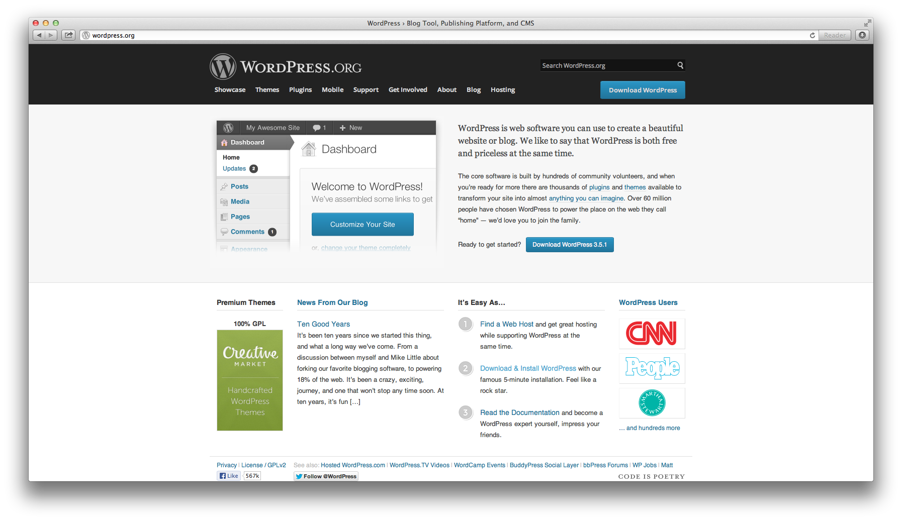
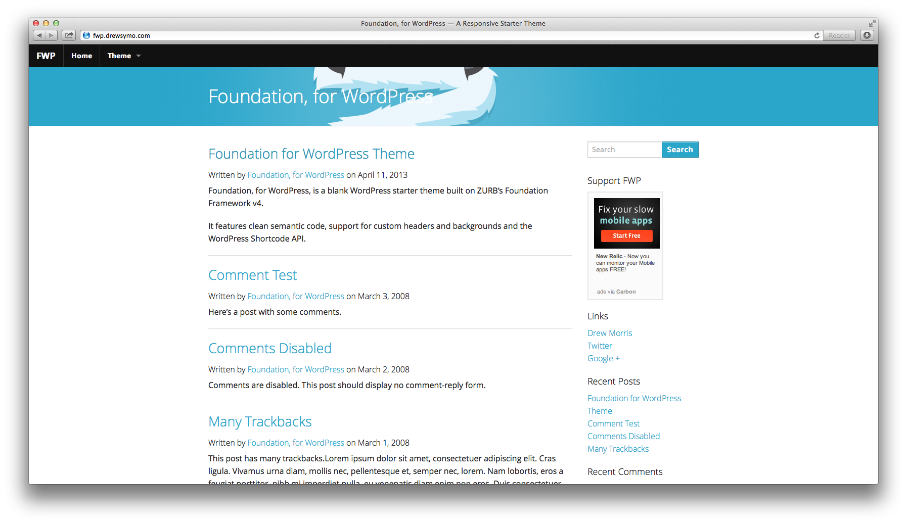
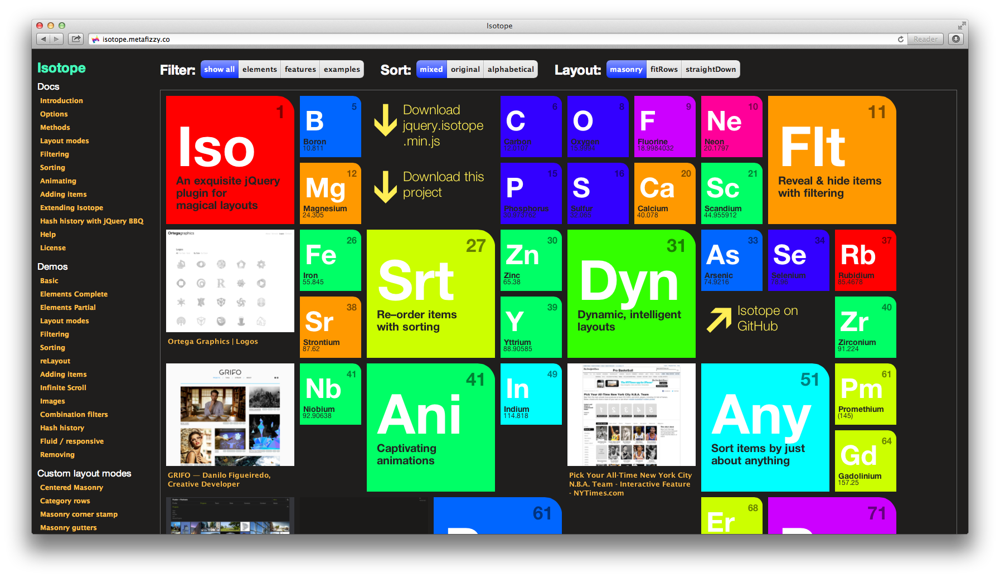
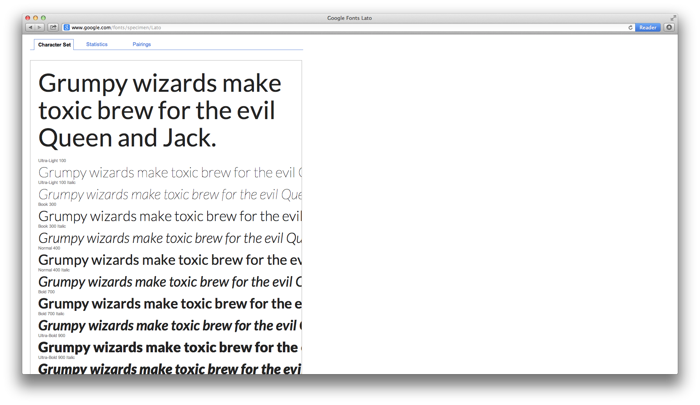
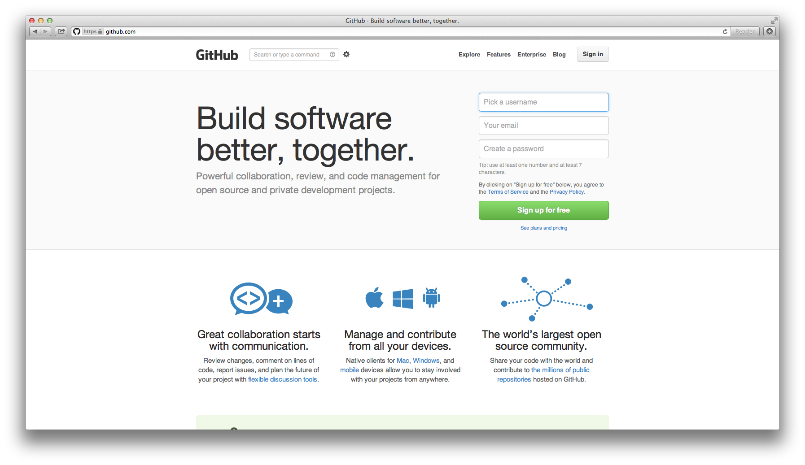
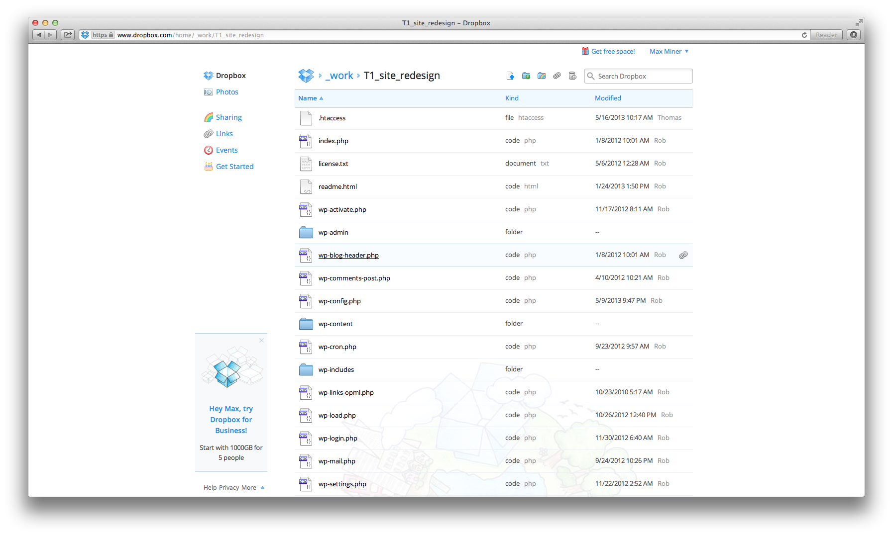
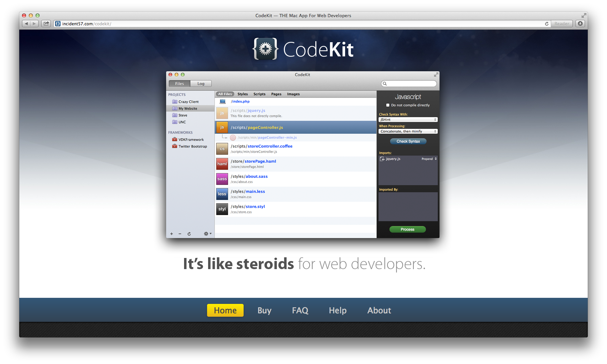
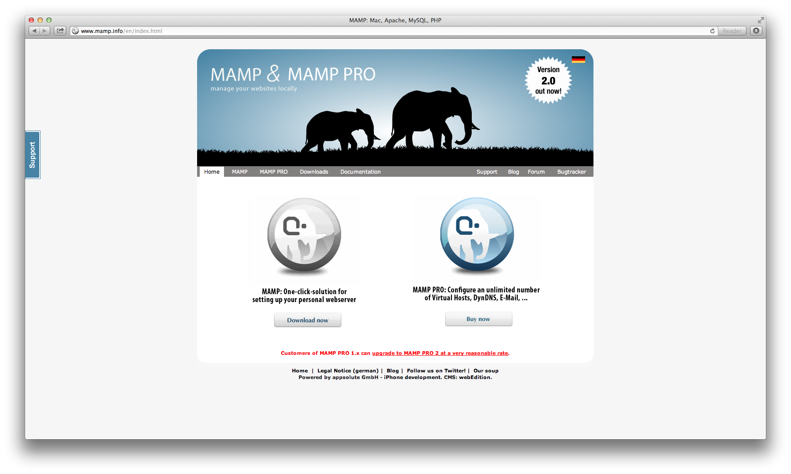
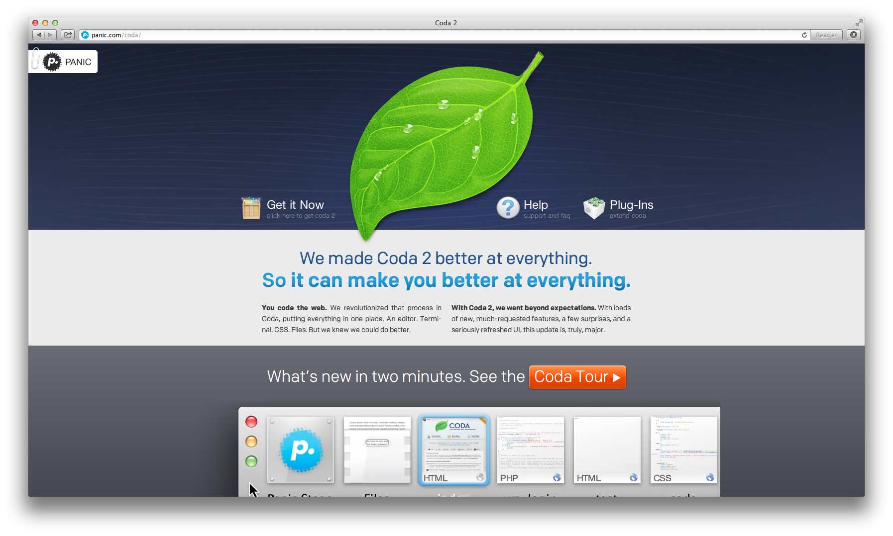

THE LIST:
-
Foundation, by Zurb
Foundation 4 by Zurb, touted as "The most advanced responsive front-end framework in the world" will provide us with pre-established HTML, CSS and Javascript building blocks needed in order to construct the front end of the new Team One website
Notable Features Include:
- › Mobile first framework
- › Semantic code
- › Responsive breakpoints
- › Pre-established HTML page templates
- › 12-column grid
- › Icon font set
- › Available related Wordpress themes
REFERENCE LINK / Foundation by Zurb
OUR LINK / Framework for Team One redesign
-
Wordpress
Wordpress will be leveraged as the content management system for the Team One redesign allowing us to provide for easily editable content and delegation of content ownership responsibilities to multiple stakeholders
REFERENCE LINK / Wordpress.org
OUR LINK / Framework for Team One redesign
-
“Foundation, for Wordpress” Theme
This theme will be leveraged as the starting point for our front-end Wordpress development providing a .php system already completely integrated with the basic Foundation features such as the grid, component library and CSS styling
REFERENCE LINK / Foundation, for Wordpress
-
Isotope jQuery Plugin
We plan to leverage this plugin for use in the Work & Team sections of the new redesigned website in order to provide users with the ability to sort/filter content in an engaging and intuitive way
REFERENCE LINK / Metafizzy's Isotope jQuery Plugin
-
Lato Webfont
For the site's body copy, we have decided to select a new font moving away from the serif Clarendon currently leverage - serif font's tend to be more difficult on user's eyes - to an popular, open-source, sans-serif webfont called, "Lato". We will pull this font via Google's free webfont service allowing us to select specific font styles and weights to leverage.
REFERENCE LINK / Lato Webfont via Google
-
GitHub
 -
Dropbox
Dropbox will be used to support and store all work-in-progress files and select content items - its cloud-based features will allow the team to access, edit and share files from a variety of locations and devices
 -
CodeKit
 -
MAMP
 -
Coda 2
